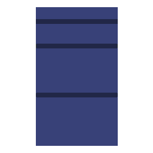

O que é a Coleta Seletiva Solidária UFSM
Consiste na coleta dos resíduos recicláveis gerados na UFSM por associações de selecionadores de resíduos habilitadas, de acordo com o Decreto 5940/2006.
| Resíduo | Tipo |
|---|
Tipos de Resíduos
-
 Resíduos RecicláveisOs resíduos recicláveis (contêineres verdes) são papéis, metais, vidros e plásticos. Esses resíduos são recolhidos e destinados às Associações Habilitadas, os quais são triados e a classificados de acordo com a existência de mercado comprador.
Resíduos RecicláveisOs resíduos recicláveis (contêineres verdes) são papéis, metais, vidros e plásticos. Esses resíduos são recolhidos e destinados às Associações Habilitadas, os quais são triados e a classificados de acordo com a existência de mercado comprador. -
 Resíduos OrgânicosOs resíduos orgânicos (contêineres marrons) são enviados à unidade de compostagem do Colégio Politécnico da UFSM.
Resíduos OrgânicosOs resíduos orgânicos (contêineres marrons) são enviados à unidade de compostagem do Colégio Politécnico da UFSM. -
 RejeitosOs rejeitos (contêineres pretos ou cinzas) são recolhidos pela Coleta Pública realizada pela Prefeitura Municipal e são destinados ao aterro da cidade.
RejeitosOs rejeitos (contêineres pretos ou cinzas) são recolhidos pela Coleta Pública realizada pela Prefeitura Municipal e são destinados ao aterro da cidade. -
Resíduos EletroeletrônicosDescrição
-
Resíduos EspeciaisNo sentido de ampliar as alternativas para destinação correta de resíduos tanto gerados pela UFSM quanto pela comunidade em geral, foram firmadas parcerias e/ou desenvolvidos projetos com instalação PEVs (pontos de entrega voluntária) para:
-
Óleo de fritura usado
Destinação: fabricação de biodiesel
Parceria: Fundação M’Oã e Recóleo – Projeto Saúde da Água
Recomendação: Antes de colocar o óleo na garrafa plástica ou vidro deixe esfriar e depositar os resíduos da fritura. Verta somente o óleo a garrafa descartando no resíduo orgânico, o depósito sólido que ficou no fundo. Quando a garrafa estiver com ¾ do volume, descarte. Para descartar leve ao PEV mais próximo, derrame o óleo na bombona e leve o vasilhame de volta para coletar novamente.
Relação de PEVs
CCNE - prédio 13
CE - prédio 16
CCS - prédio 26
CAL - prédio 40
CCR - prédio 42
CEFD- prédio 51
Colégio Politécnico - prédio 70F
CCSH - prédio 74C
RU I e RU II
Reitoria Campus Santa Maria
HUSM subsolo
Centro da Cidade de Santa Maria
Antiga Reitoria
Prédio de Apoio (abaixo das capelas do HC)
-
Esponjas de louça
Destinação: produção de madeira plástica
Parceria: Fan Turismo. Programa da ONG Terracycle e Scotch Brite no qual qualquer grupo, seja empresa ou não pode se inscrever para formar uma brigada visando a destinação de resíduos pós-consumo como material escolar, esponjas, embalagens de produtos de higiene e outros.
Os coletores para esponjas de louça usadas estão disponíveis em seis PEVs de óleo de fritura usado. Não são aceitas esponjas que entraram em contato com materiais perigosos e/ou tóxicos.
PEVs
CCNE - prédio 13
CE - prédio 16
CCSH - prédio 74C
RU I
Reitoria Campus Santa Maria
Antiga Reitoria
-
Banners de lona
Destinação: confecção de bolas, sacolas, carteiras e outros produtos.
Parceria: AAPECAN Santa Maria (RS). É um projeto de extensão do CCNE da UFSM sob coordenação do Grupo Incorpore Ações Coletivas para o Meio Ambiente.
Elevador - prédio 16B
Sala 2220 - prédio 18
Sala 3224 - prédio 19
AAPECAN Santa Maria
-
Papa-Bitucas (coletor de bitucas de cigarro)
Destinação: aterro.
Parceria: Rede Bituca UFSM (Curso de Administração – CCSH e Grupo Incorpore Ações Coletivas para o Meio Ambiente – CCNE).
OBS: Caso necessite descartar uma grande quantidade dos resíduos citados acima, favor entrar em contato com COMPLANA pelo e-mail: comissaoambiental.ufsm@gmail.com
-
Logística Reversa
Embalagens de tonners e cartuchos de tinta de impressora: devolver ao Almoxarifado Central.
Pneus: deixar na empresa que realizou a troca mediante comprovante de destinação fornecido.
Embalagens plásticas de óleo combustível e lubrificante: deixar no posto de troca mediante comprovante de destinação do óleo e da embalagem.
-
Lâmpadas Fluorescentes
-
Localização dos containers
Quem faz a coleta?
A coleta é realizada semanalmente, por quatro associações da cidade, habilitadas em processo público aberto pela UFSM. São elas: Associação de Selecionadores de Materiais Recicláveis (ASMAR), Associação de Materiais Recicláveis Pôr do Sol (ARPS), Associação de Reciclagem de Seletivo Esperança (ARSELE) e Associação Noêmia Lazzarini.
Informações Adicionais
Site da Coleta Seletiva Solidária
Site da UMA (Universidade Meio Ambiente)
Email: uma@ufsm.br